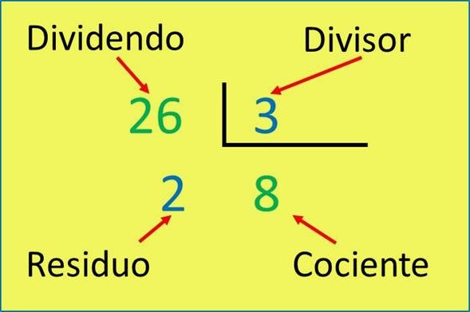

La función “mod” de PSeInt permite calcular el residuo (o el resto de una división). Una de las condiciones básicas de la paridad es que el residuo al dividir por 2 cualquier número sea “0”. Si se observa la figura 1, el resultado de aplicar la función “mod” al número 24, sería 0, lo que indicaría condición de paridad.
El comando Mod devuelve el resto de la división entera de número1 entre número2. Notas: Mod acepta expresiones de tipo Entero, Entero largo y Reales. Sin embargo, si número1 o número2 son números reales, los números primeros son redondeados y luego se calcula Mod.
En la siguiente imagen se ve un poco del ejemplo de la division que hace
Como se observa en el ejemplo anterior el residuo de 24/224/2 es 0 entonces lo que da el residuo de la division asi sera lo que el MOD PSeint Interpretara
Ahora veremos una pequeña estructura de la division usada (Con otros ejemplos claro)
En el ejemplo de arriba se puede apreciar el residuo, la manera mostrada es como PSeint Lo interpreta
Haz Click en el boton de abajo para ver la pagina de ejemplos